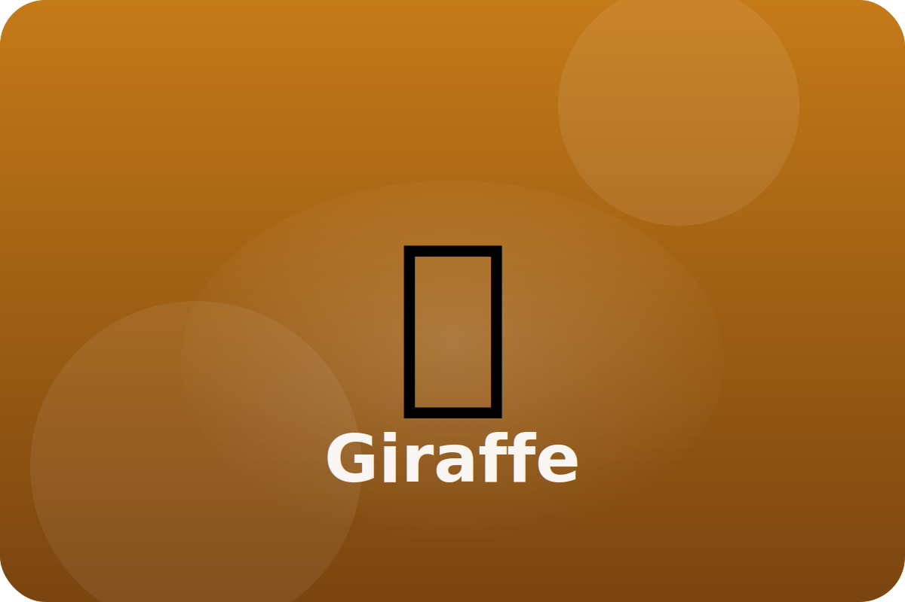

Savannah
Life with a long neck
Giraffes tower above the savannah, gently pulling leaves from tall acacia trees with their tongues.
Purple Tongue
A giraffe's tongue can reach almost two feet and is tough enough to handle thorny branches.
Leggy Power
Long legs make giraffes fast runners, helping them escape hungry lions.
Sky-High Eyes
Being tall lets giraffes spot danger early and warn nearby animals.
Keep exploring the Giraffe
Watch the Giraffe in action
Giraffes for Kids